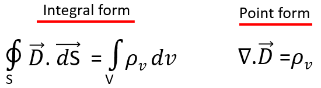
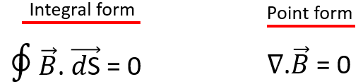

HOME BLOG EBOOKS ABOUT CONTACT SHOP
In 1865, renowned physicist James Clerk Maxwell published his theory uniting electricity and magnetism with the help of a set of equations, which we now call as the Maxwell’s equations. He first used the equations to propose that light is an electromagnetic phenomenon. Today these equations form the foundation of classical electromagnetism, optics, and various other fields of study.The whole of Electromagnetic phenomenon can be explained using these 4 equations. The Maxwell's equations can be expressed in 2 forms, the Differential form (point form) and the Integral form.
The Maxwell's equations are based on 4 laws: Gauss's Law for Electricity, Ampere's Law, Gauss's Law for Magnetism, Faraday's Law.
In this section, we discuss two of the Maxwell's laws, namely the Gauss's law for Electricity and Gauss's law for Magnetism. Both these laws are valid for both static and varying Electric and Magnetic fields.
The gauss’s law for electricity states that “The electric flux passing through any closed surface is equal to the total charge enclosed by that surface”. This law relates the electric field to the charge distribution that produced it.
Refer Gauss's Law for Electricity

The two forms are interconvertible and essentially represent the same thing. But the difference is in the quantities used to express the Law. The integral form relates the surface integral of the Electric flux density to charge producing it. Whereas the differential form relates the divergence of the Electric flux density to the Charge density. Either of these forms can be used depending on the problem you’re trying to solve.
The gauss’s law for magnetism states that “The magnetic flux through a closed surface is always zero”. This law essentially emphasizes on the fact that magnetic monopoles do not exist in nature. Magnets always exist as dipoles.
Refer Gauss's Law for Magnetism
